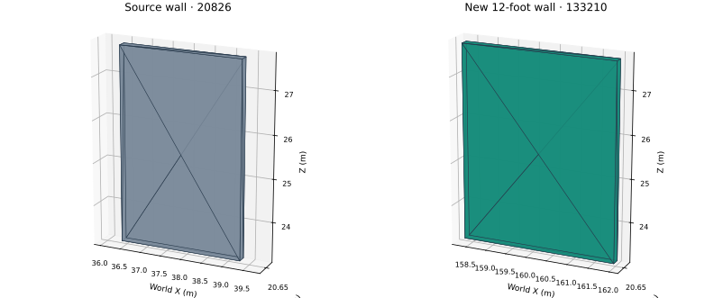

RVT CLEAN-ROOM RESEARCH · INDEPENDENT IFC GEOMETRY EVIDENCEParametric native wall: 9.5 to 12 feet
360existing wall meshes unchanged
+121.92 mworld X displacement
8 / 12vertices / triangles in each wall

New wall dimensions: 3.6576 × 0.2032 × 4.5720 m. Same material and effective thickness; all prior native identities remain unchanged.
IFC owner-history correction is a separate explicit export control. Corrected source and candidate pass schema validation; geometry checks use IfcOpenShell / OpenCASCADE, independently of the native reader.
Validation boundary: these are technical plots of actual IFC meshes, not Revit UI. The non-room-bounding toggle and native regeneration behavior remain unproven. Autodesk acceptance has not been tested.
Independent saved native BRep: 6 faces, 12 edges, 8 vertices; closed solid, Euler characteristic 2; volume 120.000000 ft³. Decoded directly from this RVT; no IFC or wall-driver dimensions used for this measurement. Four open auxiliary sheets are reported separately.
Native candidate SHA-256: 271c54903276ebc540206979d8b54d008aec485fb823704433633f909de54c39